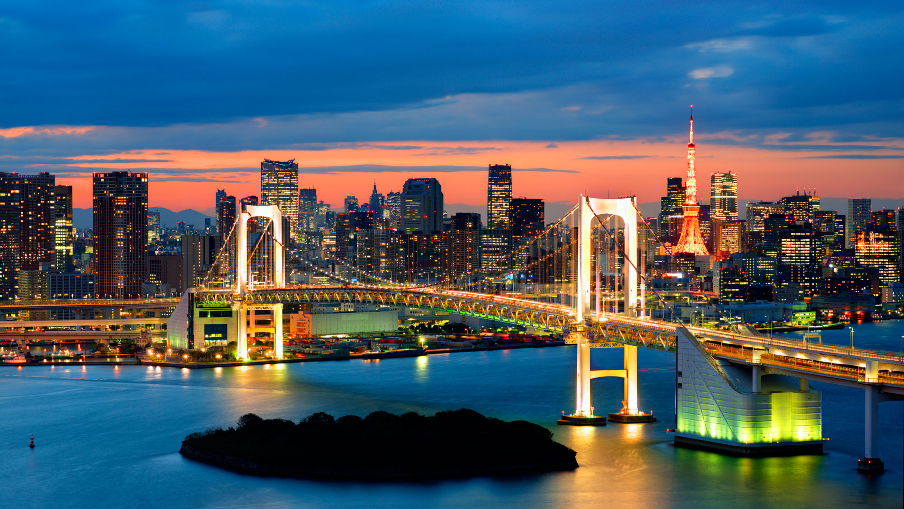
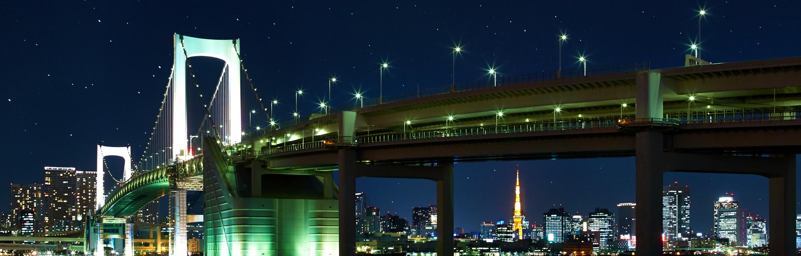

Tokyo Rainbow Bridge
Rainbow Bridge is named for the tri-colored lights on towers supporting its suspension cables. Solar-powered red, white and green lights are often complemented with blue lighting on supports below the bridge. A rainbow spectrum is created, with muted reflections in the waters of Tokyo Bay.
The 2,618-foot (798-meter) suspension bridge is a major transportation route within Tokyo. The bridge has an expressway that connects Shibaura Pier to the Odaiba waterfront area in Minato. The expressway occupies an upper toll deck, while a lower deck contains a monorail and lanes for ordinary car and truck traffic, and pedestrians.
For one of the most interesting views of the bridge, go to Odaiba, near the Daiba station. A replica of the Statue of Liberty towers above the trees in the foreground. Beyond the statue, the bridge creates a striking image accompanying Tokyo’s skyline. In the background, Tokyo Tower is an eye-catching replica of France’s Eiffel Tower.
Odaiba has many waterfront vantage points and restaurants offering excellent daytime views of Rainbow Bridge. Even more impressive is the post-sunset view as the high-rises and bridge light up. Traveling under the massive structure by water bus provides a unique perspective. Take a trip on the monorail to enjoy the view from its wide windows as you cross the bridge. Combine some exercise with photography on a walk across the bridge. To the north are views of Tokyo Tower, Skytree and the city skyline. To the south are the beach and Fuji television building of Odaiba. On exceptionally clear days you might see Mount Fuji.
For pedestrians, the bridge is free. It opens at mid-morning and closes overnight, with a pre-sunset close in the winter. Dress warmly for a winter walk! The bridge is also closed on the third Monday of the month, from December 29 to 31, and during bad weather. To access the bridge on the mainland Tokyo side, take a train to the Shibaurafuto station; from there it's 10-minute walk to the bridge. Odaibakaihinkoen station in Odaiba has a connecting walkway to the bridge.